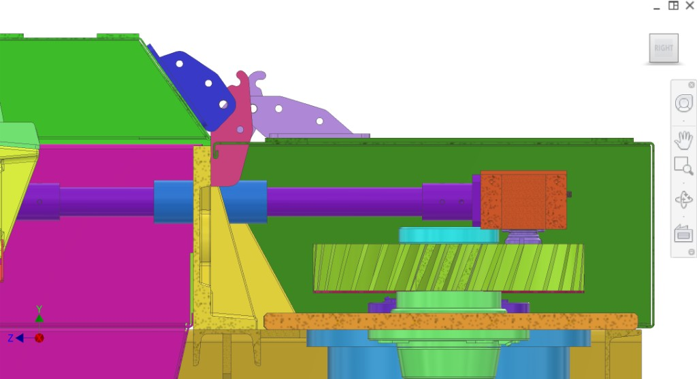

Guards/shell panels that protect users from moving parts: drivetrain/belt cover, plunger-side cover, and any additional splash protection surfaces.
Introdução
Enclosure and shell panels exist to prevent accidental contact with moving parts (belt/pulleys, plunger drive, moving peeler assemblies) and to support hygiene/splash containment during washdown. Covers are designed as folded sheet metal with bracing where needed so overcentered hinges mount to stiff backing rather than directly to thin 2 mm sheet.
Legenda de cores & components
Protective covers and mounting hinges (CAD colours vary across figures).
Colour(s)
Component
—
Plunger cover — protects the core ejection (plungers + drive bracket). Must open to provide full internal access.
—
Drivetrain cover — covers belt/pulley and drivetrain moving parts; cleanable and water-protected.
—
Overcentered hinge mount — stiff bracing/backing plates so hinges are stable and repeatable.
Figuras
Existing enclosure CAD views (reuse from `Enclosure-shell/images/`).

Figure 1. Enclosure covers — plunger-side access and drivetrain protection.
1 / 1
Figuras recomendadas (clareza para o contratado)
Add figure: Plunger cover open envelope — full operator access clearance (down/flip path).
Add figure: Belt guard seam — washdown-friendly joint vs drivetrain cover.
Add figure: Interlock switch placement — coded magnet target on each lid.
Discussão
Componentes
Drive belt/pulley cover — belt guard mounted to back structure; protects users from belt coming off.
Plunger-side cover — protects core ejection plungers; must open downwards or flip away so operators have full interior access when opened.
Drivetrain shell cover — covers the entire drivetrain/splash zone and provides splash containment.
Interfaces
Input: moving drivetrain and plunger assemblies; splash/juice environment.
Output: user-safe barrier + cleanable interior access when opened.
Mount: frame/side rails using overcentered hinge mounts and bracing backing plates.
Interfaces e tolerâncias
Covers must not collide with moving parts over the full machine stroke. Lid openings must preserve the operator’s line of sight into the plunger/peeler service area.
Part
Interface / tolerance
Related
Plunger cover
Overcenter hinge geometry + clearance; opening direction must provide full access (no upward obstruction)